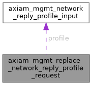

|
AXIAM C SDK 1.1.3
C11 client SDK for AXIAM (CONTRACT.md §1-§7, §9-§11, §13 incl. §6.1 mTLS)
|
The body of PUT /api/v1/network/profiles/{segment_id}.
More...
#include <management_models.h>

Data Fields | |
| axiam_mgmt_network_reply_profile_input_t * | profile |
| The profile. | |
| long | segment_version |
The segment's version as the caller read it, as for [CreateReplyProfileRequest::segment_version]. | |
| long | version |
The profile's version as the caller read it. | |
The body of PUT /api/v1/network/profiles/{segment_id}.
| axiam_mgmt_network_reply_profile_input_t* axiam_mgmt_replace_network_reply_profile_request::profile |
The profile.
| long axiam_mgmt_replace_network_reply_profile_request::segment_version |
The segment's version as the caller read it, as for [CreateReplyProfileRequest::segment_version].
| long axiam_mgmt_replace_network_reply_profile_request::version |
The profile's version as the caller read it.
A stale one is 409.